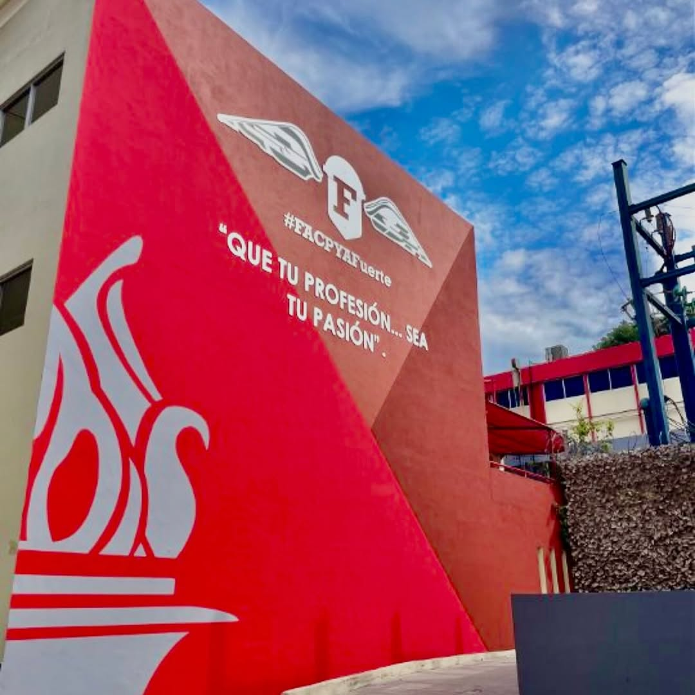

Facultad De Contaduria Publica y administracion.

Desde que entre a facpya entre con el objetivo de llegar a ser licenciado en LTI y graduarme para poder trabajar en alguna empresa haciendo algo de mi carrera y ganar un buen salario, Hubieron algunas dificultades durante el camino pero pues logre pasar las materias complicadas, Ahora me encuentro con un tema que de verdad me interesa realmente el cual es HTML, CSS Y Boostrap.